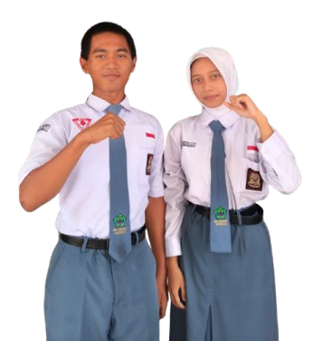

Jl. AMD No.4, Desa Sukareja, Kecamatan Warureja, Kabupaten Tegal, Provinsi Jawa Tengah

Visi
Mewujudkan OSIS SMA N 1 Warureja menjadi osis yang berintegritas, bertanggung jawab dalam membentuk siswa-siswi yang disiplin, peduli, dan berperan aktif dalam menjaga lingkungan sekolah.
Misi
1. Meningkatkan kesadaran siswa-siswi mengenai pentingnya menerapkan kedisiplinan dan menjaga lingkungan sekolah,
2. Mengoptimalkan peran dan fungsi OSIS sebagai salah satu wadah untuk menampung aspirasi sisiwa dalam menyelenggarakan kegiatan sekolah,
3. Meningkatkan potensi yang dimiliki siswa/i melalui kegiatan ekstrakulikuler.